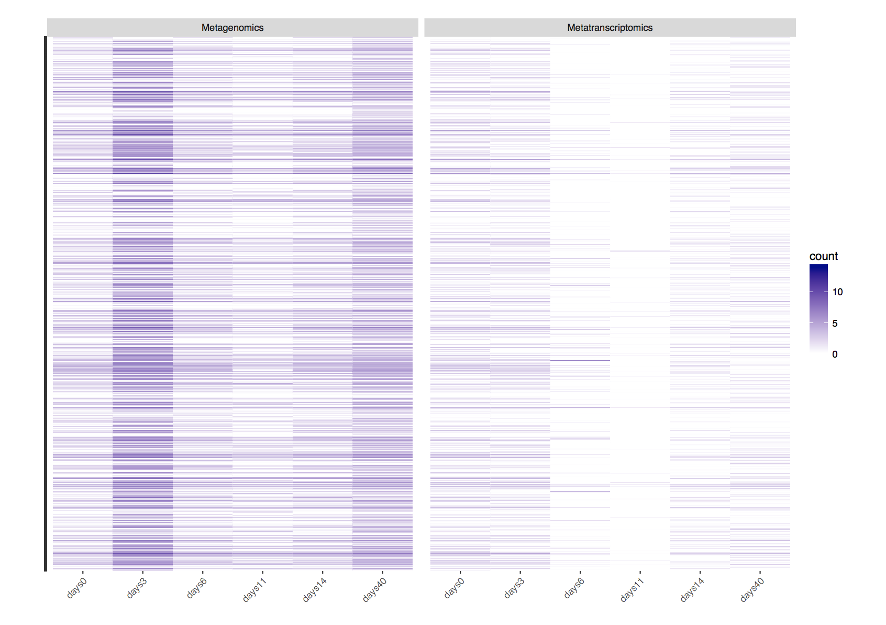

Mining EMG with R part 2B
3. InterproScan: relative occurence during treatment.¶
Extract the data from the data structure “results” created earlier and partition the extracted data per datatype.
1 2 3 4 5 | ipr <- tbl_df(results$IPR_abundances) ipr<- separateDataType(mydf=ipr, metadata=metadata) ipr_g <- ipr$genome ipr_t <- ipr$transcript ipr_a <- ipr$amplicon |
Calculate the relative occurrence of IPR enrichment per day of treatment for both metagenomic and transcriptomic data types.
1 2 3 4 5 6 | ipr_metagenomics <- ipr_g %>% gather(condition, count, 3:ncol(ipr_g)-1) %>% group_by( condition) %>% mutate(prop=count/sum(count)) ipr_metatransciptomics <- ipr_t %>% gather(condition, count, 3:ncol(ipr_t)-1) %>% group_by( condition) %>% mutate(prop=count/sum(count)) |
1 2 3 | ipr_genomic_transcriptomics <- rbind(ipr_metagenomics, ipr_metatransciptomics) ipr_genomic_transcriptomics <- ipr_genomic_transcriptomics %>% mutate(description=as.character(description), count=log2(count+1)) |
Bar plot of relative abundance of IPR
1 2 3 4 5 6 7 8 9 10 11 | ipr_genomic_transcriptomics %>% arrange(desc(prop)) %>% ggplot( aes(x=condition, y=prop,fill=description)) + geom_bar(stat='identity', position='fill', aes(fill = description)) + facet_wrap(~DataType, ncol=1) + ggtitle('IPR relative abundance through treatment\n per datatype') + ylab('proportion abundance') + theme_light() + theme(axis.text.x=element_text(angle=45, hjust=1), axis.text.y=element_blank()) + coord_flip() + theme(legend.position="none") |
Heat map of absolute InterproScan hit counts throughout treatment
1 2 3 4 5 | ipr_genomic_transcriptomics %>% ggplot( aes(x=condition,y=description))+ facet_grid(~DataType) + geom_tile(aes(fill=count)) + scale_fill_gradient(low="white", high="darkblue") + xlab("") + ylab("") + theme(axis.text.x=element_text(angle=45, hjust=1), axis.text.y=element_blank()) |

4. GO (all category): relative occurence during treatment.¶
The goal here is to create a composite plot of all GO category occurence during treatments. Give meaningful names to conditions as for the taxonomic case
1 2 3 4 5 6 7 8 9 10 11 12 13 14 15 | GO <- tbl_df(results$GO_abundances) GO <- GO %>% mutate(description=as.character(description), category=as.character(category)) GO_g <- GO %>% select(matches("_G|description|category")) %>% mutate(DataType="Metagenomics") GO_t <- GO %>% select(matches("_T|description|category")) %>% mutate(DataType="Metatranscriptomics") GO_a <- GO %>% select(matches("_A|description|category")) %>% mutate(DataType="Amplicon") colnames(GO_g) <- renameSample(metadata=metadata, localdf=GO_g) colnames(GO_t) <- renameSample(metadata=metadata, localdf=GO_t) colnames(GO_a) <- renameSample(metadata=metadata, localdf=GO_a) |
Transform the data from a wide format to a long format, making use of the tidyr package function gather, and compute the relative frequency of occurrence per days of treatment
1 2 3 4 5 6 | GO_metagenomics <- GO_g %>% gather(condition, count, 4:ncol(GO_g)-1) %>% group_by( condition, category) %>% mutate(prop=count/sum(count)) GO_metatransciptomics <- GO_t %>% gather(condition, count, 4:ncol(GO_t)-1) %>% group_by( condition, category) %>% mutate(prop=count/sum(count)) |
Merge both metatranscriptomic and metagenomic relative occurrences of GO per condition to visualise the relative abundance of all GO category terms that are dynamic during treatment.
1 | GO_genomic_transcriptomics <- rbind(GO_metagenomics, GO_metatransciptomics) |
Barplot of relative abundance of all GO terms
1 2 3 4 5 6 7 8 9 | GO_genomic_transcriptomics %>% arrange(desc(prop)) %>% ggplot( aes(x=condition, y=prop,fill=description)) + geom_bar(stat='identity', position='fill', aes(fill = description)) + facet_grid(category~DataType) + ggtitle('Gene Ontology relative abundance through days \n of treatment per datatype') + ylab('proportion abundance') + theme_light() + theme(axis.text.x=element_text(angle=45, hjust=1)) + coord_flip() + theme(legend.position="none") #+ guides(fill=guide_legend(ncol=2)) |

5.0 Correspondance Analysisis of the contingency tables.¶
The goal of this analysis is to elucidate the relationship between species and GO terms with respect to various treatment conditions (days). We will make use of the variable created above.
1 2 3 4 5 6 7 8 9 10 | head(genomic_transcriptomics) taxonomy_long <- genomic_transcriptomics %>% ungroup() %>% mutate(condition=paste(DataType, condition, sep="_")) %>% select(phylum, condition, count) head(taxonomy_long) taxonomy_wide <- spread(taxonomy_long, condition, count) rownames(taxonomy_wide) <- taxonomy_wide$Phylum taxonomy_wide taxonomy_wide.df <- select(taxonomy_wide, -phylum) %>% as.data.frame() |
Transpose the matrix for the purpose of plotting
1 | taxonomy<- t(taxonomy_wide.df) |
1 2 3 4 | setup.plot <- ggplot() + coord_fixed() + labs(x="Comp1, Axis1", y="Comp2, Axis2") + geom_hline(yintercept=0, col="darkgrey") + geom_vline(xintercept=0, col="darkgrey") |
1 2 3 4 5 6 7 | myscree <- function(eigs, x=0.8, y=0.1, just=c("right","bottom")){ vp <- viewport(x=x, y=y, width=0.2, height=0.2, just=just) mm <- data.frame(x=factor(1:length(eigs)), y=eigs) sp <- ggplot(mm, aes(x=x, y=y)) + geom_bar(stat="identity") + labs(x = NULL, y = NULL) + theme_light() print(sp, vp=vp) } |
1 2 3 4 | taxonomy.dna <- taxonomy_wide.df %>% select(matches('Metagenomics')) taxonomy.rna <- taxonomy_wide.df %>% select(matches('Metatranscriptomics')) taxonomy.dna<- t(taxonomy.dna) taxonomy.rna<- t(taxonomy.rna) |
1 2 3 4 | data.dna <- metadata[metadata$datatype=="Metagenomic" & !(metadata$datatype=="Amplicon_DNA"| metadata$datatype=="Amplicon_RNA"),] data.rna <- metadata[metadata$datatype=="Metatranscriptomic" & !(metadata$datatype=="Amplicon_DNA"| metadata$datatype=="Amplicon_RNA"),] |
Perform a Correspondance analysis on Metagenomic data
1 | taxonomy.coa <- dudi.coa(taxonomy.dna, scannf=F, nf=2) |
Plot the correspondence analysis with Ade4 native plotter
1 | scatter(taxonomy.coa) |
The plot can be made more visually appealing and easier to interpret with ggplot2, making use of data computed for us by Ade4 (dudi.coa). These are in the object return by the dudi.coa function.
1 2 3 4 5 6 7 8 9 10 | taxonomy.dna.plot<- setup.plot + geom_point(data=data.frame(taxonomy.coa$li, data.dna), aes(x=Axis1, y=Axis2, col=days, shape=days, size=3)) + geom_text(data=taxonomy.coa$co, aes(x=Comp1, y=Comp2, label=rownames(taxonomy.coa$co)), position = "jitter", alpha=0.2) + scale_size_area(breaks=c(0,3,6,11,14,40)) + scale_shape(solid=F) + labs(title="Correspondence Analysis: Metagenomics\nTaxonomy abundance") + theme_light() taxonomy.dna.plot myscree(taxonomy.coa$eig / sum(taxonomy.coa$eig)) |

5.1 Perform a Correspondence analysis on the Metatranscriptomic data¶
1 2 3 4 5 6 7 8 9 10 11 12 | taxonomy.coa <- dudi.coa(taxonomy.rna, scannf=F, nf=2) taxonomy.rna.plot <- setup.plot + geom_point(data=data.frame(taxonomy.coa$li, data.rna), aes(x=Axis1, y=Axis2, col=days, shape=days, size=3)) + geom_text(data=taxonomy.coa$co, aes(x=Comp1, y=Comp2, label=rownames(taxonomy.coa$co)), position = "jitter", alpha=0.2) + scale_size_area(breaks=c(0,3,6,11,14,40)) + scale_shape(solid=F) + labs(title="Correspondence Analysis: Metatranscriptomic\nTaxonomy abundance") + theme_light() taxonomy.rna.plot myscree(taxonomy.coa$eig / sum(taxonomy.coa$eig)) |

Question
What can you conclude despite the very sparse data?
Merge taxonomic and GO_slim_abundances for correspondence analysis._ Organise the taxonomy data
1 2 3 4 5 | taxonomy <- tbl_df(results$phylum_taxonomy_abundances) %>% select(-kingdom) phylum <- taxonomy$phylum taxonomy <- taxonomy %>% select(-phylum) %>% t() colnames(taxonomy) <- phylum taxonomy <- taxonomy[!grepl('_A$',rownames(taxonomy)),] |
Organise the ontologies data
1 | ontology.meta <- tbl_df(results$GO_slim_abundances) %>%select(GO,description, category) |
Organise the Biological processes data
1 2 3 4 | go.bp <- tbl_df(results$BP_GO_slim_abundances) %>%select(-GO, -category) description.go <- go.bp$description go.bp <- go.bp %>% select(-description) %>% t() colnames(go.bp) <- description.go |
Organise the Molecular function data
1 2 3 4 | go.mf <- tbl_df(results$MF_GO_slim_abundances) %>%select(-GO, -category) description.go <- go.mf$description go.mf <- go.mf %>% select(-description) %>% t() colnames(go.mf) <- description.go |
Organise the Cellular compartment data
1 2 3 4 | go.cc <- tbl_df(results$CC_GO_slim_abundances) %>%select(-GO, -category) description.go <- go.cc$description go.cc <- go.cc %>% select(-description) %>% t() colnames(go.cc) <- description.go |
Organise the IPR data
1 2 3 4 | ipr <- tbl_df(results$IPR_abundances) %>% select(-IPR) description.ipr <- ipr$description ipr <- ipr %>% select(-description) %>% t() colnames(ipr) <- description.ipr |
Read in the annotation material
1 | metainfo <- metadata
|
Filter out the amplicons data
1 2 | metainfo <- metainfo %>% filter(!grepl('_A$', id)) metainfo |
Merge the Taxonomy and Molecular Functions and perform Correspondence Analysis (CA) on the merge set
1 2 | mydf <- cbind(taxonomy, go.mf) mydf <- mydf[rownames(mydf) %in% metainfo$id,] |
Call on dudi.coa function from Ade4 package to perform CA
1 | mydf.coa <- dudi.coa(mydf, scannf=F, nf=2) |
Visualize the CA analysis with ggplot2
Question
What can you conclude from this analysis?
5.2 Merge Taxonomy and Biological processess and perform Correspondence Analysis (CA) on the merge set¶
1 2 3 | mydf <- cbind(taxonomy, go.bp) mydf <- mydf[rownames(mydf) %in% metainfo$id,] mydf.coa <- dudi.coa(mydf, scannf=F, nf=2) |
Question
What can you conclude from this analysis?
5.3 Merge Taxonomy and Cellular Compartment and perform Correspondence Analysis (CA) on the merge set¶
1 2 3 | mydf <- cbind(taxonomy, go.cc) mydf <- mydf[rownames(mydf) %in% metainfo$id,] mydf.coa <- dudi.coa(mydf, scannf=F, nf=2) |
Visualize the CA analysis with ggplot2
Question
What can you conclude from this analysis?
5.4 Merge Taxonomy, Cellular Compartments and Molecular functions then perform Correspondence Analysis (CA) on the merge set¶
Merging Taxonomy and Cellular compartment and Molecular function
1 2 3 | mydf <- cbind(taxonomy, go.cc, go.mf) mydf <- mydf[rownames(mydf) %in% metainfo$id,] mydf.coa <- dudi.coa(mydf, scannf=F, nf=2) |
Question
What can you conclude from this analysis?
6.0 Clustering of the Principal Component¶
1 2 | compositedata <- as.data.frame(mydf) rownames(compositedata) <- paste(metainfo$days, metainfo$genomictype, sep="_" ) |
1 | compositedata<- compositedata[, which(!apply(compositedata,2,FUN=function(x){all(x==0)}))] |
1 | ca.analysis <- CA(compositedata) |
1 | clustering<- HCPC(ca.analysis, nb.clust=-1, order=TRUE) |
1 | plot(clustering) |
Question
What do you conclude from this graph?
6.1 To find out the relationship between annotations(BP,CC), species we transpose the above table prior to performing a CA.¶
1 2 | annoSpecies <- as.data.frame(t(compositedata)) rownames(annoSpecies) <- rownames(t(compositedata)) |
CA
1 | anno.ca.analysis <- CA(annoSpecies) |
Perform a hierarchical clustering of the following principal component created above to see the relationship between species and annotation.
1 | anno.clustering<- HCPC(anno.ca.analysis, nb.clust=-1, order=TRUE) |
1 | plot(anno.clustering) |
Question
What can you conclude from this clustering?
APPENDIX
To reproduce this hands on session, your R sessionInfo() must be identical to the following:
1 | sessionInfo()
|